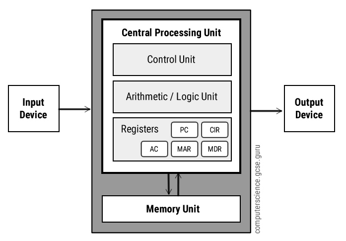
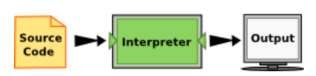
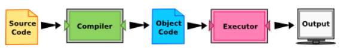
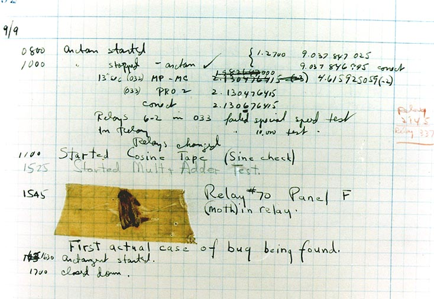

Introduction & The way of the program¶
Goals¶
By the end of this class, the student should be able to:
Describe the goals, methods and assessment of the Unit
Describe introductory concepts on Problem solving, Algorithms and Programming Languages
Describe the concepts of program, errors and debugging
Bibliography¶
J. Correia Lopes, Description of Course Unit, September 2020, available at content Wiki EN and PT
Peter Wentworth, Jeffrey Elkner, Allen B. Downey, and Chris Meyers, How to Think Like a Computer Scientist — Learning with Python 3 (Chapter 1) [PDF April 2020] [HTML]
Presentation of the Course¶
Unit Goals¶
The global aim of this Unit is to give the student the ability to create algorithms, and to use a programming language to implement, test, and debug algorithms for solving simple problems.
The student will be able to understand and use the fundamental programming constructs, and the Functional approach to programming, specifically effect-free programming where function calls have no side-effects and variables are immutable, and contrast it with the Imperative approach.
\(\Rightarrow\) https://web.fe.up.pt/~jlopes/doku.php/teach/fpro/sheet
Bibliography¶
Peter Wentworth, Jeffrey Elkner, Allen B. Downey, and Chris Meyers, How to Think Like a Computer Scientist — Learning with Python 3 [PDF] [HTML]
and more:
David Mertz, Functional Programming in Python [PDF]
Brad Miller and David Ranum, Learning with Python: Interactive Edition [HTML]
Steven F. Lott, Building Skills in Python - A Programmer’s Introduction to Python [HTML]
Ernesto Costa, Programação em Python – Fundamentos e Resolução de Problemas [Library]
Assessment¶
Eligibility for exams¶
Student can not exceed the absences limit (25% of the total number of estimated recitation classes)
Students must obtain a minimum of 40% in the last practical on computer evaluations: \(PE04 \geq 40\%\)
Calculation formula of final grade¶
LE = Lecture in-class evaluation
RE = Recitation and away weekly evaluation
PE = Practical on computer evaluation: Individual programming assignments
TE = Theory evaluation: Individual multiple-choice questions about programming concepts
Final classification: \(10\% LE + 10\% RE + 50\% PE + 30\% TE\)
\(\Rightarrow\) Read the full story
Computers, Algorithms and Programs¶
Computer Scientists¶
Like mathematicians, computer scientists use formal languages to denote ideas (specifically computations).
Like engineers, they design things, assembling components into systems and evaluating tradeoffs among alternatives.
Like scientists, they observe the behavior of complex systems, form hypotheses, and test predictions.
Problem solving¶
The single most important skill for a computer scientist is problem solving.
Problem solving means the ability to formulate problems, think creatively about solutions, and express a solution clearly and accurately
The process of learning to program is an excellent opportunity to practice problem-solving skills.
Algorithm¶
If problem solving is a central part of computer science, then the solutions that you create through the problem solving process are also important. In computer science, we refer to these solutions as algorithms.
| A set of specific steps for solving a category of problems
| steps + flow + stop decision
The computer architecture¶

\(\Rightarrow\) https://www.computerscience.gcse.guru/theory/von-neumann-architecture
High-level languages¶
Low-level languages (machine languages or assembly languages), are the only languages a computer executes;
Thus, programs written in a high-level language have to be translated into something more suitable before they can run;
Python is an example of a high-level language;
Other high-level languages you might have heard of are C++, JavaScript, PHP, Pascal, C# or Java.
Python Interpreter¶
There are two ways to use it:
In immediate mode (or Shell mode), you type Python expressions into the Python Interpreter window, and the interpreter immediately shows the result;
In script mode (or program mode), you can write a program in a file and use the interpreter to execute the contents of the file.

\(\Rightarrow\) runestone.academy
\(\Rightarrow\) Spyder3 IDE
6 + 3
9
Compilers¶
Note that some languages are compiled (e.g. C++)

\(\Rightarrow\) [https://runestone.academy/runestone/books/published/thinkcspy/GeneralIntro/ThePythonProgrammingLanguage.html]
Virtual machines¶
Many modern languages use both processes
They are first compiled into a lower level language, called byte code,
and then interpreted by a program called a virtual machine
Python uses both processes, but because of the way programmers interact with it, it is usually considered an interpreted language
The way of the program¶
Python¶
Python is everywhere and is quite popular among data scientists and startups.
Python has the added benefit of being a clean and simple syntax with massive community run library (NumPy, Pandas, SciPy, etc.).
Later, there’s lots you can do with Python:
Web Development
Scientific and Numeric Computing
Machine Learning (neural networks)
Chat bots
Automate the boring stuff
Write your own games
FPRO’s YouTube channel: FPRO’s past projects
Watch one of the videos:
from IPython.display import YouTubeVideo
YouTubeVideo('5Db6WDhePrM')
Execute an example of Python code:
#!/usr/bin/env python3
# https://github.com/fpro-feup/public/blob/master/lectures/01/basics.py
import datetime
now = datetime.datetime.now()
print()
print("Current date and time using str method of datetime object:")
print()
print(str(now))
print()
print("Current date and time using instance attributes:")
print()
print("Current year: %d" % now.year)
print("Current month: %d" % now.month)
print("Current day: %d" % now.day)
print("Current hour: %d" % now.hour)
print("Current minute: %d" % now.minute)
print("Current second: %d" % now.second)
print("Current microsecond: %d" % now.microsecond)
print()
print("Current date and time using strftime:")
print(now.strftime("%Y-%m-%d %H:%M"))
Current date and time using str method of datetime object:
2020-10-14 17:02:16.196372
Current date and time using instance attributes:
Current year: 2020
Current month: 10
Current day: 14
Current hour: 17
Current minute: 2
Current second: 16
Current microsecond: 196372
Current date and time using strftime:
2020-10-14 17:02
1.1 The Python programming language¶
Python is an interpreted high-level programming language for general-purpose programming
Created by Guido van Rossum and first released in 1991
Python has a design philosophy that emphasizes code readability, notably using significant whitespace.
It provides constructs that enable clear programming on both small and large scales
Python features a dynamic type system and automatic memory management
It supports multiple programming paradigms, including imperative, functional, procedural and object-oriented
It has a large and comprehensive standard library
1.2 What is a program?¶
A program is a sequence of instructions that specifies how to perform a computation
A few basic instructions appear in just about every language:
input: Get data from the keyboard, a file, or some other device (such as a sensor)
output: Display data on the screen or send data to a file or other device (such as a motor)
math: Perform basic mathematical operations like addition and multiplication
conditional execution: Check for certain conditions and execute the appropriate sequence of statements
repetition: Perform some action repeatedly, usually with some variation
1.3 What is debugging?¶
Programming is a complex process, and because it is done by human beings, it often leads to errors
Programming errors are called bugs and the process of tracking them down and correcting them is called debugging.

\(\Rightarrow\) https://en.wikipedia.org/wiki/Software_bug
1.4 Syntax errors¶
Syntax refers to the structure of a program and the rules about that structure
For example, in English, a sentence must begin with a capital letter and end with a period
Python can only execute a program if the program is syntactically correct; otherwise, the process fails and returns an error message
1.5 Runtime errors¶
A runtime error does not appear until you run the program.
These errors are also called exceptions because they usually indicate that something exceptional (and bad) has happened.
50 / 0
---------------------------------------------------------------------------
ZeroDivisionError Traceback (most recent call last)
<ipython-input-4-aaed92358df0> in <module>
----> 1 50 / 0
ZeroDivisionError: division by zero
\(\Rightarrow\) Understanding the Python Traceback
Using Spyder3, note the differences between edit and run environments
1.6 Semantic errors¶
With a semantic error in your program, it will run successfully, but it will not do the right thing
The problem is that the program you wrote is not the program you intended to write
The meaning of the program (its semantics) is wrong
1.7 Experimental debugging¶
One of the most important skills you will acquire is debugging.
Although it can be frustrating, debugging is one of the most intellectually rich, challenging, and interesting parts of programming.
In some ways, debugging is like detective work (clues, inference, …)
Debugging is also like an experimental science
1.8 Formal and natural languages¶
Natural languages are the languages that people speak, such as English
Formal languages are languages that are designed by people for specific applications
For example, the math notation is a formal language that is particularly good at denoting relationships among numbers and symbols
Programming languages are formal languages designed to express computations.
Syntax rules: tokens & structure
Parsing a statement is needed to determine its structure
1.9 A Typical First Program (with bonus)¶
\(\Rightarrow\) https://github.com/fpro-feup/public/blob/master/lectures/01/hello.py
greeting = "Hello" # my first variable
# to comment MANY lines at a time, highlight all of them then CTRL+1
#whoami = "jlopes"
#greeting = greeting + " " + whoami
print("\n" + greeting + "!")
# Spyder can autocomplete names for you.
# Start typing a variable name defined in your program and hit tab
# define a variable
a_very_long_variable_name_dont_name_them_this_long_pls = 0
# below, start typing a_ve then hit <tab>... cool, right!
1.10 Comments¶
A comment in a computer program is text that is intended only for the human reader
It is completely ignored by the interpreter
#---------------------------------------------------
# This demo program shows off how elegant Python is!
# Written by John Snow, December 2015.
#---------------------------------------------------
print("Hello, World!") # Isn't this easy!
You may try it next:
print("Hello, World!") # Isn't this easy!
1.11 The Zen of Python¶
import this
Looking forward¶
For the future, by the end of the course, you may do things like this:
from bs4 import BeautifulSoup
import requests
documentURL = 'https://www.w3.org/People/Raggett/book4/ch02.html'
html = requests.get(documentURL).text
soup = BeautifulSoup(html, 'html.parser')
print(soup.get_text())